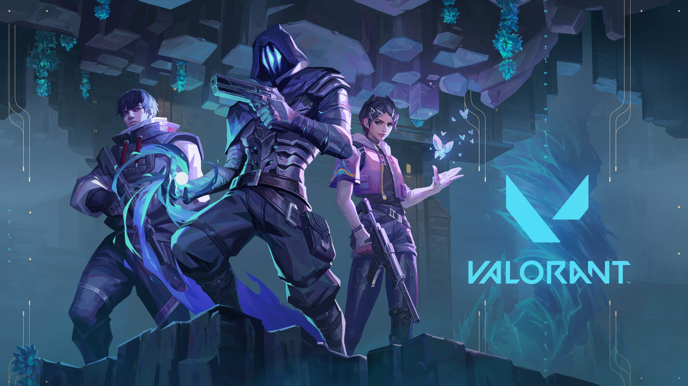
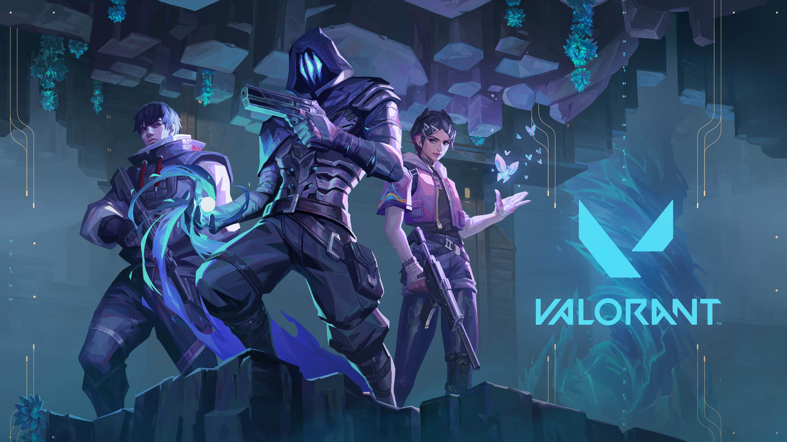

I am Jun Kuang and I am going to graduate in 2024. I go to Buchanan High School. My favorite school subjects are math, world history, economics and computer science. My plan for the future is to pursue further education in computer science at Clovis Community College. Then I plan to transfer to UC Merced to finish my education and get a Bachelor of Computer Science Degree.
 

Hobbies
My hobbies are playing video games and watching anime. My three favorite video games are League of Legend, Azur Lane, Valorant, and TFT. What I like about League of Legends is the variety of champions available for me to play and how they each have unique play style. Similarly, I enjoy Valorant because each agents have different abilities. While the reason I enjoy playing Azur Lane is because its an amazing game for killing time.
My Favorite Subjects
My two favorite subjects are math and computer science. The reason these two are my favorite subjects is because I am able to find solutions with different methods. Although at time I do find them irrating when I hit a wall.
Educational Background
I have gotten A's and B's throughout my high school years. During my junior year, I did engineering in the Center of Advance Research and Technology (CART). In the Engineering lab, I learned how to use Fusion 360 and physics. During my senior year, I did Web Application, where I learned how to code.

Club
At CART, I joined an Esport club where we played Overwatch. On Monday, we would meet up to hang out and play game together. While on Wednesday, we would compete against other Fresno Esport club. Additionally, I competed in the fall and spring tournament. The competition was better and my team did not make it far.